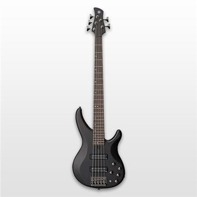
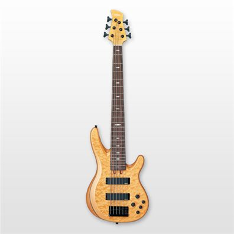

Para el bajista que solo se conforma con lo mejor, la gama Pro representa la culminación de todo aquello que los diseñadores de los BB han perseguido durante cinco cuatro décadas en búsqueda de la perfección. Este es el bajo con el que siempre has soñado...
SERIE BB
Desde su nacimiento en 1977, los bajos BB han sido la elección de muchos bajistas de renombre, y con ellos han conseguido el sonido que les ha hecho famosos: Nathan East, Tony Kanal, Billy Sheehan, Glenn Hughes, Robbie Takac, Peter Hook y Jack Gibson, entre otros. Los nuevos BB elevan el icónico estilo, la versatilidad y el legendario sonido de estos bajos clásicos a un nuevo nivel.
Eres la piedra angular de tu banda, su refugio rítmico, la base fundamental de su música. Y lo sabes... Necesitas un instrumento fiable y todoterreno para expresarte con libertad, para innovar, para crear en directo y ensanchar tus fronteras musicales. Un bajo con el que sentirte cómodo desde el primer momento. Con los TRBX de Yamaha, te sentirás en casa, todo encaja y nada se ha dejado al azar... Es tu momento...

SERIE TRB
La versátil serie Yamaha TRB nació durante los años80, paralelamente al auge de los sintetizadores. La serie se ha diseñado para abarcar un mayor espectro tonal, tanto en las frecuencias graves como en las agudas, con un confort excepcional.

SERIE RBXA2
La línea de bajos RBXA2 se inspira en el innovador diseño de la guitarra Yamaha RGXA2
Galardonada con el Good Design Award en (2005) por su extraordinaria fusión entre estética vanguardista y tecnología innovadora a nivel de sonido. La tecnología A.I.R. permite gozar de un instrumento extra-ligero pero capaz de generar un tono descomunal, lleno de profundidad y con personalidad. Los LEDs de los potenciómetros son un detalle que cautiva a todo el mundo.
Los graves del Attitude son potentes y muy marcados a la vez que compactos y controlados. Los agudos son claros y musicales, y los medios tienen una presencia en la señal que no es fácil de encontrar en ningún otro bajo. La tecnología más vanguardista, incluidos nuestro cuerpo de construcción "spline joint" (con uniones de lengüeta) y nuestras exclusivas tecnologías de tratamiento de la madera A.R.E. e I.R.A., junto con las pastillas de nuevo diseño y una unión del mástil al cuerpo completamente rediseñada, hacen que este bajo sea algo más y diferente a todos.
(ESTE TEXTO TIENE PUESTO CLEAR PARA QUE NO SE PONGA AL LADO DEL FLOAT). Los graves del Attitude son potentes y muy marcados a la vez que compactos y controlados. Los agudos son claros y musicales, y los medios tienen una presencia en la señal que no es fácil de encontrar en ningún otro bajo. La tecnología más vanguardista, incluidos nuestro cuerpo de construcción "spline joint" (con uniones de lengüeta) y nuestras exclusivas tecnologías de tratamiento de la madera A.R.E. e I.R.A., junto con las pastillas de nuevo diseño y una unión del mástil al cuerpo completamente rediseñada, hacen que este bajo sea algo más y diferente a todos.
SERIE BB Desde su nacimiento en 1977, los bajos BB han sido la elección de muchos bajistas de renombre, y con ellos han conseguido el sonido que les ha hecho famosos: Nathan East, Tony Kanal, Billy Sheehan, Glenn Hughes, Robbie Takac, Peter Hook y Jack Gibson, entre otros. Los nuevos BB elevan el icónico estilo, la versatilidad y el legendario sonido de estos bajos clásicos a un nuevo nivel.
SERIE TRBX Eres la piedra angular de tu banda, su refugio rítmico, la base fundamental de su música. Y lo sabes... Necesitas un instrumento fiable y todoterreno para expresarte con libertad, para innovar, para crear en directo y ensanchar tus fronteras musicales. Un bajo con el que sentirte cómodo desde el primer momento. Con los TRBX de Yamaha, te sentirás en casa, todo encaja y nada se ha dejado al azar... Es tu momento...
SERIE TRB La versátil serie Yamaha TRB nació durante los años80, paralelamente al auge de los sintetizadores. La serie se ha diseñado para abarcar un mayor espectro tonal, tanto en las frecuencias graves como en las agudas, con un confort excepcional.
SERIE RBXA2 La línea de bajos RBXA2 se inspira en el innovador diseño de la guitarra. Galardonada con el Good Design Award en (2005) por su extraordinaria fusión entre estética vanguardista y tecnología innovadora a nivel de sonido. La tecnología A.I.R. permite gozar de un instrumento extra-ligero pero capaz de generar un tono descomunal, lleno de profundidad y con personalidad. Los LEDs de los potenciómetros son un detalle que cautiva a todo el mundo.
Series YAMAHA con float de otra forma
Desde su nacimiento en 1977, los bajos BB han sido la elección de muchos bajistas de renombre, y con ellos han conseguido el sonido que les ha hecho famosos: Nathan East, Tony Kanal, Billy Sheehan, Glenn Hughes, Robbie Takac, Peter Hook y Jack Gibson, entre otros.
Eres la piedra angular de tu banda, su refugio rítmico, la base fundamental de su música. Y lo sabes... Necesitas un instrumento fiable y todoterreno para expresarte con libertad, para innovar, para crear en directo y ensanchar tus fronteras musicales. Un bajo con el que sentirte cómodo desde el primer momento.
La versátil serie Yamaha TRB nació durante los años80, paralelamente al auge de los sintetizadores. La serie se ha diseñado para abarcar un mayor espectro tonal, tanto en las frecuencias graves como en las agudas, con un confort excepcional.
La línea de bajos RBXA2 se inspira en el innovador diseño de la guitarra Yamaha RGXA2
Galardonada con el Good Design Award en (2005) por su extraordinaria fusión entre estética vanguardista y tecnología innovadora a nivel de sonido.